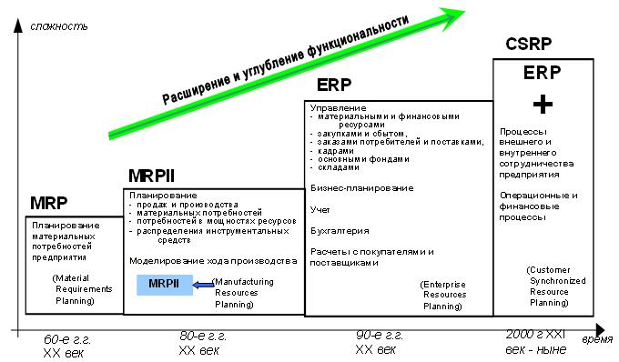

Корпоративные информационные системы
В самом общем смысле термин Корпорация означает объединение предприятий, работающих под централизованным управлением и решающих общие задачи. Корпорация является сложной,многопрофильной структурой и вследствие этого имеет распределенную иерархическую систему управления.
Корпоративное управление определяется как система взаимоотношений между акционерами, советом директоров и правлением, определенные уставом, регламентом и официальной политикой компании, а также принципом главенства права на основе принятой бизнесмодели.
Корпоративная информационная система (КИС) - это совокупность информационных систем отдельных подразделений предприятия, объединенных общим документооборотом, таких, что каждая из систем выполняет часть задач по управлению принятием решений, а все системы вместе обеспечивают функционирование предприятия в соответствии со стандартами качества ИСО 9000.
Главная задача КИС - эффективное управление всеми ресурсами предприятия (материально- техническими, финансовыми, технологическими и интеллектуальными) для получения максимальной прибыли и удовлетворения материальных и профессиональных потребностей всех сотрудников предприятия.
КИС по своему составу - это совокупность различных программно-аппаратных платформ, универсальных и специализированных приложений различных разработчиков, интегрированных в единую информационно-однородную систему, которая наилучшим образом решает в некотором роде уникальную задачу каждого конкретного предприятия. То есть, КИС - человеко-машинная система и инструмент поддержки интеллектуальной деятельности человека, которая под его воздействием должна:
- Накапливать определенный опыт и формализованные знания;
- Постоянно совершенствоваться и развиваться;
- Быстро адаптироваться к изменяющимся условиям внешней среды и новым потребностям предприятия.
Комплексная автоматизация предприятия подразумевает перевод в плоскость компьютерных технологий всех основных деловых процессов организации. И использование специальных программных средств, обеспечивающих информационную поддержку бизнес-процессов, в качестве основы КИС представляется наиболее оправданным и эффективным. Современные системы управления деловыми процессами позволяют интегрировать вокруг себя различное программное обеспечение, формируя единую информационную систему. Тем самым решаются проблемы координации деятельности сотрудников и подразделений, обеспечения их необходимой информацией и контроля исполнительской дисциплины, а руководство получает своевременный доступ к достоверным данным о ходе производственного процесса и имеет средства для оперативного принятия и воплощения в жизнь своих решений. И, что самое главное, полученный автоматизированный комплекс представляет собой гибкую открытую структуру, которую можно перестраивать на лету и дополнять новыми модулями или внешним программным обеспечением.
Преимущества внедрения корпоративных информационных систем
Рассмотрим преимущества внедрения корпоративных информационных систем:
а) получение достоверной и оперативной информации о деятельности всех подразделений компании;
б) повышение эффективности управления компанией;
в) сокращение затрат рабочего времени на выполнение рабочих операций;
г) повышение общей результативности работы за счет более рациональной ее организации.
История развития КИС
Рисунок 1 отражает периоды развития взглядов на функции КИС и характерные названия типов систем в рамках каждого периода. В дальнейшем, мы рассмотрим каждый тип систем подробнее.
Следует отметить, что система любого типа включает в себя системы более ранних типов. Это значит, что системы всех типов мирно сосуществуют и ныне.

Рисунок 1 - История развития корпоративных информационных систем
Требования к корпоративным информационным системам
В современных условиях производство не может существовать и развиваться без высоко эффективной системы управления, базирующейся на самых современных информационных технологиях. Постоянно изменяющиеся требования рынка, огромные потоки информации научно-технического, технологического и маркетингового характера требуют от персонала предприятия, отвечающего за стратегию и тактику развития высокотехнологического предприятия быстроты и точности принимаемых решений, направленных на получение максимальной прибыли при минимальных издержках. Оптимизация затрат, повышение реактивности производства в соответствии со все возрастающими требованиями потребителей в условиях жесткой рыночной конкуренции не могут базироваться только на умозрительных заключениях и интуиции даже самых опытных сотрудников. Необходим всесторонний контроль над всеми центрами затрат на предприятии, сложные математические методы анализа, прогнозирования и планирования, основанные на учете огромного количества параметров и критериев и стройной системе сбора, накопления и обработки информации. И путь здесь может быть только один - создание КИС, отвечающей ряду жестких требований.
Исторически сложился ряд требований к корпоративным информационным системам. Требования эти таковы:
- Системность;
- Комплексность;
- Поддержку распределенной обработки информации
- Модульность;
- Открытость;
- Адаптивность;
- Надежность;
- Безопасность;
- Масштабируемость;
- Мобильность;
- Простота в изучении;
- Поддержка внедрения и сопровождения со стороны разработчика;
- Эффективность.
Рассмотрим эти требования подробнее.
КИС, прежде всего, должна отвечать требованиям комплексности и системности. Она должна охватывать все уровни управления от корпорации в целом с учетом филиалов, дочерних фирм, сервисных центров и представительств, до цеха, участка и конкретного рабочего места и работника. Весь процесс производства с точки зрения информатики представляет собой непрерывный процесс порождения, обработки, изменения, хранения и распространения информации. Функционирующее предприятие можно представить в виде информационно-логической модели, состоящей из узлов и связей между ними. Такая модель должна охватывать все аспекты деятельности предприятия, должна быть логически обоснована и направлена на выявление механизмов достижения основной цели в условиях рынка - максимальной прибыли, что и подразумевает требование системности. Достаточно эффективное решение этой задачи возможно только на базе строгого учета максимально возможного обоснованного множества параметров и возможности многокритериальных поливариантных анализа, оптимизации и прогнозирования - то есть комплексности системы.
Информация в такой модели носит распределенный характер и может быть достаточно строго структурирована на каждом узле и в каждом потоке. Таким образом ИС должна поддерживать распределенную обработку информации. Узлы и потоки могут быть условно сгруппированы в подсистемы, что выдвигает еще одно важное требование к КИС - модульность построения. Это требование также очень важно с точки зрения внедрения системы, поскольку позволяет распараллелить, облегчить и, соответственно, ускорить процесс инсталляции, подготовки персонала и запуска системы в промышленную эксплуатацию.
Поскольку ни одна реальная система не может быть исчерпывающе полной и в процессе эксплуатации может возникнуть необходимость в дополнениях, а также в силу того, что на функционирующем предприятии могут быть уже работающие и доказавшие свою полезность компоненты КИС, следующим определяющим требованием является открытость.
Любое предприятие существует не в замкнутом пространстве, а в мире постоянно меняющегося спроса и предложения, требующем гибко реагировать на рыночную ситуацию, что может быть связано иногда с существенным изменением структуры предприятия и номенклатуры выпускаемых изделий или оказываемых услуг. У крупных корпораций могут быть экстерриториальные подразделения, находящиеся в зоне юрисдикции других стран или свободных экономических зон. Это означает, что КИС должна обладать свойством адаптивности, то есть гибко настраиваться на разное законодательство, иметь разноязыковые интерфейсы, уметь работать с различными валютами одновременно.
Одним из важнейших требований к ИС является надежность ее функционирования, подразумевающая непрерывность функционирования системы в целом даже в условиях частичного выхода из строя отдельных ее элементов вследствие непредвиденных и непреодолимых причин. Требование надежности обеспечивается созданием резервных копий хранимой информации, выполнения операций протоколирования, поддержанием качества каналов связи и физических носителей информации, использованием современных программных и аппаратных средств.
Чрезвычайно большое значение для любой крупномасштабной системы, содержащей большое количество информации, имеет безопасность, которое включает в себя несколько аспектов. Защита данных от потери реализуется, в основном, на организационном, аппаратном и системном уровнях. Сохранение целостности и непротиворечивости данных заключается в том, что прикладная система должна отслеживать изменения во взаимозависимых документах и обеспечивать управление версиями и поколениями наборов данных. Предотвращение несанкционированного доступа к данным внутри системы решается комплексно как организационными мероприятиями, так и на уровне операционных и прикладных систем. Предотвращение несанкционированного доступа к данным извне: решение этой части проблемы ложится в основном на аппаратную и операционную среду функционирования КИС и требует ряда административно-организационных мероприятий.
Предприятие, успешно функционирующее и получающее достаточную прибыль, имеет тенденцию к росту, образованию дочерних фирм и филиалов, что в процессе эксплуатации КИС может потребовать увеличения количества автоматизированных рабочих мест, увеличения объема хранимой и обрабатываемой информации, что выдвигает требование масштабируемости.
На определенном этапе развития предприятия рост требований к производительности и ресурсам системы может потребовать перехода на более производительную программно-аппаратную платформу. Чтобы такой переход не повлек за собой кардинальной ломки управленческого процесса и неоправданных капиталовложений на приобретение более мощных прикладных компонентов, необходимо выполнение требования мобильности.
Простота в изучении - это требование, включающее в себя не только наличие интуитивно понятного интерфейса программ, но и наличие подробной и хорошо структурированной документации, возможности обучения персонала на специализированных курсах и прохождения ответственными специалистами стажировки на предприятиях родственного профиля, где данная система уже эксплуатируется.
Поддержка разработчика. Это понятие включает в себя целый ряд возможностей, таких, как получение новых версий программного обеспечения бесплатно или с существенной скидкой, получение дополнительной методической литературы, консультации по горячей линии, получение информации о других программных продуктах разработчика, возможность участия в семинарах, научно-практических конференциях пользователей и других мероприятиях, проводимых разработчиком или группами пользователей и т.д.
Сопровождение включает в себя выезд специалиста на объект заказчика для устранения последствий аварийных ситуаций, техническое обучение на объекте заказчика, методическую и практическую помощь при необходимости внести изменения в систему, не носящие характер радикальной реструктуризации или новой разработки. Подразумевается также установка новых релизов программного обеспечения, получаемого от разработчика бесплатно силами уполномоченной разработчиком сопровождающей организации или силами самого разработчика.
Эффективность системы заключается в минимизации сроков для решения возложенных на систему задач с учетом выделенных ей ресурсов. В любом случае оценка эффективности будет производиться заказчиком, исходя из вложенных в разработку средств и соответствия представленной информационной системы его ожиданиям. Негативной оценки эффективности информационной системы со стороны заказчика можно избежать, если представители заказчика будут привлекаться к проектированию системы на всех его стадиях.
В свою очередь прикладная система выдвигает ряд требований к среде, в которой она функционирует. Средой функционирования прикладной системы являются сетевая операционная система, операционные системы на рабочих станциях, система управления базами данных и ряд вспомогательных подсистем, обеспечивающих функции безопасности, архивации и т.п. Как правило, список этих требований и указания по конкретному набору системного программного обеспечения содержатся в документации по конкретной прикладной системе.
Процесс внедрения КИС
Процесс разработки и внедрения КИС исполняется по следующему сценарию:
а) Анализ существующих систем или разработка требований к создаваемой системе;
б) Типовой процесс внедрения:
1) Разработка стратегии автоматизации.
2) Анализ деятельности предприятия.
3) Реорганизация деятельности.
4) Выбор системы.
5) Внедрение системы.
6) Эксплуатация.
К типичным проблемам при внедрении КИС относят:
а)Подготовка предприятия к автоматизации.
б)Выбор системы.
В таблице 1 приведены примерные функции системы и их характеристики. При разработке технического задания на разработку системы или при сравнительном анализе сопоставимых альтернативных систем желательно составить подобную таблицу и заполнить её для альтернативных систем.
Таблица 1 - Функции системы и их плюсы использования
Функция системы | Позволяет делать | Качественный выигрыш |
Блок проектирования | ||
Item Part Number Control (Управление структурой изделия) | Управляет структурой изделия с точностью до комплектующих (узлов и агрегатов) | Повышение точности данных для планирования производственной деятельности, обеспечение стыка с системами проектирования |
Bill of Materials Control (Управление спецификациями продуктов) | Контролирует весь перечень материалов, требуемых для производства конечного изделия (как количественно, так и в финансовом эквиваленте) | Повышение точности данных для планирования производственной деятельности, обеспечение стыка с системами проектирования |
Блок контроля инженерной документации | ||
Routings (Маршрутизация) | Управляет распределением потока заказов по цехам (рабочим местам) | Оптимальная загрузка цехов (оборудования) |
Estimating (Смета) | Оценка влияния изменений | Точный учет затрат, связанных с изменениями |
Design Engineering (Разработка технологии) | Подготавливает технологию выпуска продукции | Оптимальная технология выпуска продукции |
Блок управления закупками | ||
Vendor Performance (Исполненные поставки) | Учет исполнения запланированных поступлений | Точный учет запасов, повышение достоверности планирования |
Purchase Order Management (Управление заказами на закупку) | Планирование и ввод заказов на закупку | Сокращение материальных запасов за счет обеспечения поставок в требуемый срок |
Subcontract Purchase Orders (Заказы на закупку по субконтрактам) | Планирование и ввод заказов на закупку, выполняемых субподрядчиками | Сокращение материальных запасов за счет обеспечения поставок в требуемый срок |
Блок управления материальными запасами | ||
Inventory Control (Управление запасами) | Планирование и учет запасов | Сокращение материальных запасов за счет планирования поставок к требуемому сроку |
Master Production Scheduling (План-график выпуска продукции) | Среднесрочный объемно-календарный план выпуска продукции | Выпуск продукции к требуемому сроку, сокращение издержек на хранение продукции |
Material Requirements Planning (Планирование потребностей в материалах) | Планирование необходимых материалов по количеству и срокам | Сокращение времени простоя из-за нехватки материалов, сокращение материальных запасов |
Lot/Serial Tracking (Отслеживание партий/серий) | Учет выпуска партий продукции | Повышение точности планирования продаж, сокращение материальных запасов |
Rough-Cut Capacity Planning (Укрупненное планирование мощностей) | Планирование необходимых мощностей на основании требуемых для выпуска видов продукции ресурсов | Оптимальная загрузка критических ресурсов под виды продукции |
Производственный блок | ||
Shop Floor Control (Управление на уровне производственного цеха) | Составление оперативных (дни-месяц) план-графиков | Оптимальная загрузка цеха, детальное планирование выпуска продукции |
Capacity Requirements Planning (Планирование потребностей в мощностях) | Детальное планирование потребных мощностей до уровня рабочих центров | Оптимальная загрузка всех рабочих мест |
Project Control (Управление проектом) | Управление проектами предприятия | Выполнение проектов с требуемым качеством в заданные сроки |
Блок управления издержками | ||
Job Costing (Трудовые издержки) | Рассчитывает трудозатраты | Выделение затрат, связанных с работой персонала |
Cash Flow Analysis (Анализ наличных потоков) | Анализ всех денежных потоков предприятия | Оптимальное регулирование денежных потоков |
Actual Costs (Действительные издержки) | Расчет реальной себестоимости | Выявление неэффективных участков и технологий |
Standard Costs (Нормативная стоимость) | Расчет плановой себестоимости | Поддержка процесса снижения издержек |
Work Breakdown Structure (Стоимость этапов работ) | Расчет себестоимости работ по отдельным этапам | Поддержка процесса снижения издержек |
Блок управления финансами | ||
Accounts Receivable (Выставленные счета) | Выставление счетов к оплате | Учет выставленных счетов |
Accounts Payable (Оплаченные счета) | Регистрация оплаты счетов | Учет реальной оплаты выставленных счетов |
General Ledger (Главная книга) | Учет всех бухгалтерских операций | Реальная картина текущего баланса |
Multi-Company Consolidation (Консолидация баланса от многих компаний) | Объединение баланса нескольких дочерних компаний | Реальная картина баланса нескольких компаний. |
Foreign Currency Conversion (Конвертор валют) | Работа с несколькими валютами | Возможность осуществления расчетов в нескольких валютах |
Блок маркетинга/продаж | ||
Sales Order Management (Управление заказами на продажу) | Учет заказов на продукцию | Оптимальная загрузка производства |
Order Configurator (Конфигурация заказов) | Планирование последовательности заказов | Оптимальная загрузка складов, поддержка процесса оптимизации денежных потоков |
Billing/Invoicing (Выставление счетов-фактур) | Ведение книги продаж/покупок | Соответствие законодательству, сокращение затрат |
Full Sales Analysis (Полный анализ продаж) | Анализ всех аспектов продаж | Повышение достоверности прогнозирования/ планирования |
Commission Calculation/Reporting (Расчет комиссионных/ отчетность) | Расчет скидок/комиссионных | Гибкая работа с поставщиками и потребителями |
Sales Forecasting/Rollups (Прогнозирование продаж) | Подготовка исходных данных для производственых планов верхнего уровня | Повышение достоверности планирования |
Quoting (Квотирование) | Квотирование продаж | Повышение прибыли за счет управления спросом |
Рассмотрим подробнее типичные проблемы при внедрении КИС.
Этап подготовки предприятия к автоматизации
Типичный вариант, при котором работы начинаются с выбора системы, после чего специалисты поставщика автоматизированной системы проводят анализ деятельности предприятия (чаще принято говорить "обследование" предприятия) на выявление некоторых проблем в области управления и формирования соответствующих рекомендаций.
Поставщик программного решения может дать конкретные рекомендации по изменению деятельности предприятия, однако существует большая вероятность, что эти рекомендации будут отталкиваться от возможностей самого поставщика. И с еще большей вероятностью все они в конечном итоге будут направлены на изменение схемы ведения бизнеса предприятия таким образом, чтобы на нее лучше "легла" их система.
Выбор системы
Типична ситуация при выборе ERP - системы в СНГ: на предприятиях пищевой промышленности внедряется система оптимизированная для сборочного производства. Сама по себе стоимость этих двух систем может быть приблизительно одинакова, но затраты на внедрение и эксплуатацию в первом случае могут оказаться значительно выше.
Другой пример, часто обсуждаемый в литературе. Что лучше: отечественная система, учитывающая всю специфику отечественного бизнеса, или западная система, построенная на, "западных" принципах учета? Сам по себе такой вопрос выглядит несколько некорректным. Логичнее спросить, что нужно предприятию в первую очередь: отечественный бухгалтерский учет или планирование и учет товарно-материальных потоков всего предприятия.